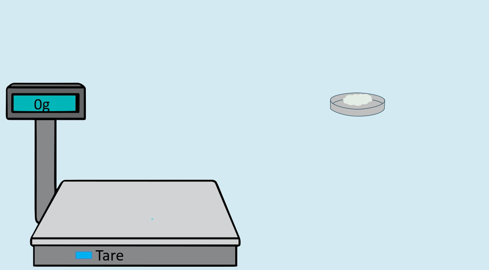
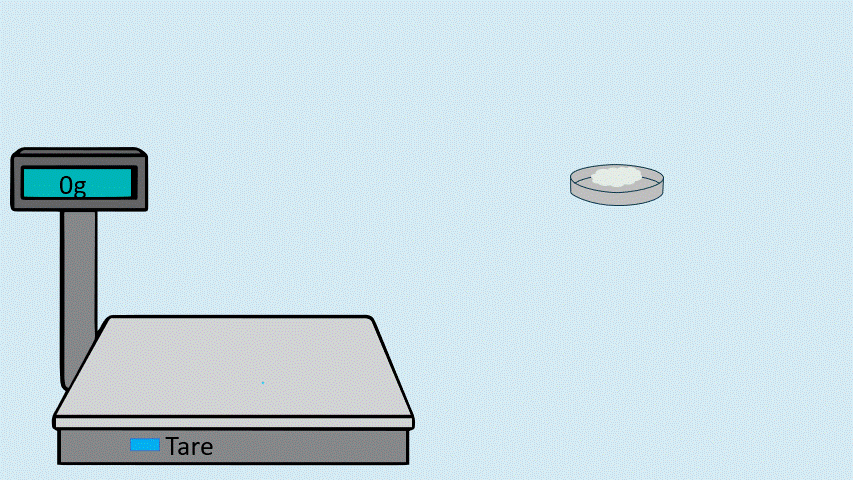

Step 6:
Weigh the dried precipitate and use the titration data to calculate the percentage of
aluminium oxide (Al₂O₃) present in the cement sample.



Weigh the dried precipitate and use the titration data to calculate the percentage of
aluminium oxide (Al₂O₃) present in the cement sample.